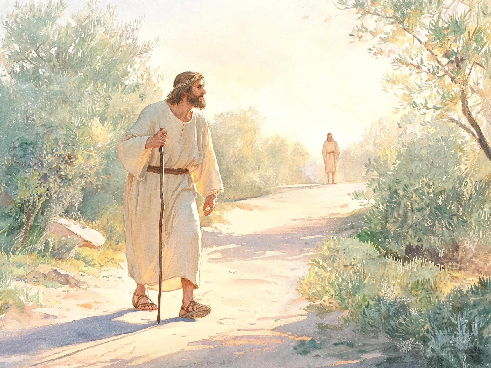

雅各一生中，最特别的一件事，不只是他改了名字，而是他从那一夜以后，留下了一条瘸腿。
很多人会问：至高者既然要赐福给雅各，为什么还要让他瘸腿？
难道不能既赐福给他，又让他完完整整地离开吗？
要回答这个问题，就要先看雅各是一个怎样的人。就要回到毗努伊勒的那个夜晚，看看生命的主人到底在做什么。
雅各从年轻时开始，就是一个很会想办法的人。
为了长子的名分，他会计划；为了父亲的祝福，他会筹算；到了拉班家，他也懂得怎样经营羊群；后来准备回去见以扫时，他又安排礼物、安排队伍、安排家人前后的顺序，希望把危险降到最低。
可以说，雅各一生都在想办法解决问题。
这正是雅各里面很深的问题。他知道至高者有能力，却仍然觉得，最后还得靠自己把事情办稳。
祷告是一回事，筹算是另一回事。求祝福是一回事，自己伸手去抓又是另一回事。
这样的雅各，像不像我们中的许多人？

直到毗努伊勒的那一夜，一切都改变了。
那一夜，有一个人来和雅各摔跤，直到黎明。那人见自己胜不过他，就摸了雅各的大腿窝——雅各的大腿窝正在摔跤的时候就扭了。
你发现了吗？那一夜，至高者没有教雅各新的方法，没有给他新的策略，也没有告诉他怎样说服以扫。
他只是摸了雅各的大腿窝。
雅各就瘸了。
为什么？为什么神要让雅各瘸腿？
因为生命的主人真正要处理的，不只是雅各外面的难处，更是他里面那个始终不肯放下自己的生命。
雅各一直以为，自己最大的危险是以扫。
可在至高者眼中，雅各更深的危险，是他一直活在自己的聪明、筹算和掌控里。
如果只是改变以扫，却不改变雅各，那么眼前的问题虽然解决了，雅各里面那个不断依靠自己的人，仍然没有被触动。下一次遇到风浪，他还是会回到老路上——靠自己的头脑，靠自己的手段，靠自己的腿。
所以那一夜，生命的主人没有先给雅各更多能力，反而让他失去原本可以倚靠的力量。
这不是因为瘸腿本身有什么功劳，也不是说人越软弱就越属灵。真正的问题是——雅各需要明白：保护他的，不是他的腿，不是他的计划，也不是他的办法，而是至高者的怜悯。
还有一个细节，非常值得思想。
雅各瘸腿以后，第二天就要去见以扫。
按人的想法，这不是更危险了吗？以前还能跑，瘸腿以后，连逃跑都困难了。
可是，正当雅各不能再像从前那样倚靠自己时，至高者已经在前面动工。
原本让雅各惧怕的相见，最后却变成兄弟相拥。
雅各准备了很多礼物，也作了很多安排。但真正改变以扫的，不是雅各的筹算，而是至高者的保守。
这件事要让雅各明白：
不是因为你计划得周全，所以你平安；
而是因为生命的主人施恩，你才能平安。
我相信，从那一天开始，雅各每走一步，都会记得那一夜。
他的瘸腿，成了一个一生都带着的记号。
这个记号不断提醒他：
以前，雅各总觉得自己还有办法。
后来，他慢慢明白，真正托住他的，不是自己的聪明，而是至高者的信实。
那条瘸腿，成了他生命中最宝贵的礼物。因为它让雅各学会了一种过去不会的走路方式——
从前，他靠自己走；后来，他只能一步一步倚靠至高者。
家人们，我们也常常和雅各一样。
我们遇到问题，第一反应就是计算、安排、推演、控制。我们并不是完全不祈祷，只是常常把祈祷放在最后，把自己放在前面。
我们嘴上说倚靠生命的主人，心里却仍然觉得：
「我只要再聪明一点，再周全一点，再努力一点，就能把一切稳住。」
可人最大的错觉，就是以为自己能够掌控结果。
生命的主人有时不会立刻拿走人的软弱。不是因为他喜欢看人受苦，而是因为有些软弱，会不断提醒我们：我们不是自己的主人，也不是环境的主人。
有时，生命的主人没有立刻拿走我们的软弱，是因为他知道，那一点始终存在的有限，反而能保护我们，不再回到骄傲、自恃和掌控里面。
所以，雅各那一夜失去的，不只是腿上的力量。
他真正失去的，是那个一直以为「我还能靠自己」的自己。
而他得着的，是一个新的名字——以色列，一个新的生命，一个真正与神同行的人生。
亲爱的朋友，也许你今天也在面对一些软弱、一些限制、一些你怎么努力都改变不了的事。
不要急着求神把它挪去。也许那正是他用来保护你的记号——让你不再靠自己的腿奔走，而是学会靠他的恩典站立。
愿我们都能像雅各一样，经过毗努伊勒的夜晚，带着那条瘸腿，却走出一条真正蒙福的路。